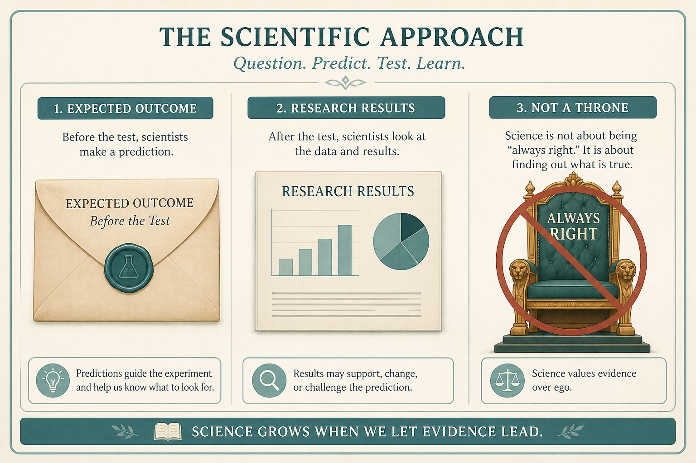

Sell doing research; UX is a power struggle
Source: Pavel A. Samsonov (@PavelASamsonov)
original post
What it claims
No amount of research will make stakeholders as confident as their biases; sell them on doing research, or they will demand impossible evidence. Ask executives what they expect before testing (Spool), or they will pretend they knew. UX is a power struggle (Cooper): Experts who are Always Right obfuscate how “right” is determined. Sell small, cheap tests aimed at learning; stakeholders must give up being the Knower while remaining on the hook for results.
Why it matters for a PO
POs often “do a study” after the decision is made, then watch it get dismissed. The work is selling the act of research and locking a prior, not producing a PDF that cannot beat a bias.
3 takeaways
- Sell the decision to research before you sell the findings.
- Capture expected outcomes in writing before the test, or the result will be absorbed into the existing story.
- Research that cannot change who decides is theater; the fight is over power, not evidence quality.
Practice this week
Before the next usability or customer session, send one email: “What do you expect we will see?” Collect answers. Run the session. Compare.